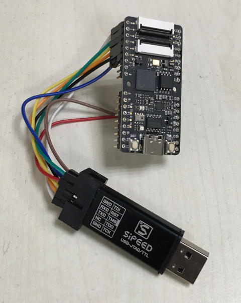

Steward
分享是一種喜悅、更是一種幸福
微處理器 - Kendryte K210 (Sipeed Maix Bit) - OpenOCD
連接TDI、TDO、TMS、TCK、RXD、TXD、RST、GND，最後記得連接USB Type-C提供電源

k210.cfg
# debug adapter source [find ft2232c.cfg] transport select jtag adapter_khz 10000 # server port gdb_port 3333 telnet_port 4444 # add cpu target set _CHIPNAME riscv jtag newtap $_CHIPNAME cpu -irlen 5 -expected-id 0x04e4796b set _TARGETNAME $_CHIPNAME.cpu target create $_TARGETNAME riscv -chain-position $_TARGETNAME # command init halt
ft2232c.cfg
interface ftdi ftdi_vid_pid 0x0403 0x6010 ftdi_layout_init 0xfff8 0xfffb ftdi_layout_signal nTRST -data 0x0100 -oe 0x0100 ftdi_layout_signal nSRST -data 0x0200 -oe 0x0200
連接步驟：
$ cd
$ wget https://s3.cn-north-1.amazonaws.com.cn/dl.kendryte.com/documents/kendryte-openocd-0.1.3-ubuntu64.tar.gz
$ tar xvf kendryte-openocd-0.1.3-ubuntu64.tar.gz
$ ./kendryte-openocd/bin/openocd -f k210.cfg
Kendryte Open On-Chip Debugger For RISC-V v0.1.3 (20180912)
Licensed under GNU GPL v2
adapter speed: 10000 kHz
Info : ftdi: if you experience problems at higher adapter clocks, try the command "ftdi_tdo_sample_edge falling"
Info : clock speed 10000 kHz
Info : JTAG tap: riscv.cpu tap/device found: 0x04e4796b (mfg: 0x4b5 (), part: 0x4e47, ver: 0x0)
Info : [0] Found 4 triggers
Info : [1] Found 4 triggers
[1] halted at 0x800005ec due to debug interrupt
Info : Examined RISCV core; found 2 harts, XLEN=64, misa=0x800000000014112d
Info : Listening on port 3333 for gdb connections
[1] halted at 0x800005ec due to debug interrupt
[0] halted at 0x800b3840 due to debug interrupt
Info : Listening on port 6666 for tcl connections
Info : Listening on port 4444 for telnet connections
P.S. 由於有連接RXD和TXD，因此，可以使用minicom開啟FT2232C做UART測試